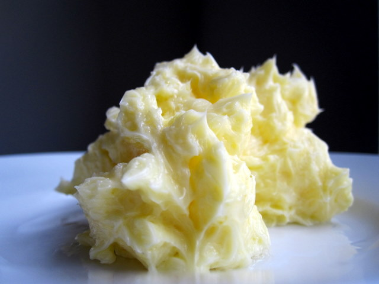

Homemade Butter

Homemade butter is a fun and delicious way to make a versatile and beloved ingreident to keep around the house.
Ingredients
- Heavy Whipping Cream
- Stand Mixer
Steps
- Add heavy whipping cream to a stand mixer.
- Set stand mixer to a speed of 2 or 3 and let mix until thick peaks are developed.
- Stop the mixer and scrape down the sides of the bowl.
- Continue mixing until butter begins to form and separates from the buttermilk
- Take butter out of the bowl and into another bowl of ice cold water.
- Wash the butter to remove any excess buttermilk. Repeat this step until water runs clear.
- Form butter to your liking and wrap in parchment paper or plastic wrap and set in fridge.